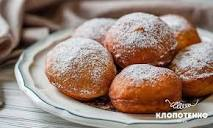

Пампушки
Пампушка — невелика кругла пишна булочка, виготовлена з дріжджового тіста з житнього, пшеничного, гречаного чи змішаного пшенично-гречаного борошна. Печені пампушки подавали до борщу замість хліба. У теперішні часи пампушки здебільшого готують з пшеничного борошна і з солодкою начинкою (ягодами, маком, варенням) та посипають цукровою пудрою чи цукром.
перейти на сторінку
